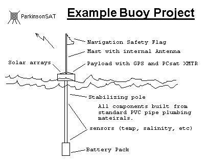

Naval Academy Amateur Satellite linked Environmental Sensors?
ParkinsonSAT
US Naval Academy Amateur Satellite Lab,
Bob Bruninga, WB4APR
Midns Papso, Edirisinghe, Meyer, Icard, Phillips (08)
Midns Campbell,Dendinger, Lewis, Lindsay, Londono, Lwin, Mayer, Okun, Smythe, Sydney (07)
Midns Paquette, Robeson, Koeppel, Piggrem, Lovick & Vandegriff (06)
Midns Edwards, Oceanography (05) and Midn Humberd, EE (04)
This page addresses two parallel projects:
Designing and building a prototype Amateur Radio ocean or bay oceanographic data buoy
Designing an amateur Satellite (ParkinsonSAT) to link the
data to the Internet.
Addressing student buoy and
satellite experiments
on amateur radio frequencies.
PRESENTATIONS:
Download the ParkinsonSAT Fall 06 Review.
Download
Students Fall-2006 work.
Download SCIENCE Serb Brief.
Download
the ParkinsonSAT Navy Serb presentation.
PROTOTYPE BUOY: To establish a baseline design for the amateur radio buoys, a prototpye was
quickly assembled in a weather proof box and placed on the end of the pier on 29 April 06.
On 12 July the solar array was doubled to keep it from going dead every night.
See the VOLTS plot below. A third panel was added a week later. And then a 4th panel...
still not enough power...
See the prototype buoy position
(click the map satellite button for view of the area)
See the
Trends or:
Volts,
T-water,
T-air,
Luminosity,
Conductivity.
Note, the Prototype Buoy was retrieved due to the coming Earnesto
storm surge on 1 Sept and we found out why we were having sun problems.
See photo.
(Darn birds)...
Also you can see why the conductivity sensor died due to marine fouling.
ParkinsonSAT: The Parkinson Satellite,
(see Psat design page) with student design and construction
funded in part by a grant from Aerospace Corporation, in honor of
Dr Parkinson
will be a dedicated amateur satellite transponder for the relay of remote environmental sensor
and other low duty-cycle amateur radio data. Since this is a classic chicken-or-egg
problem, we hope to have two transponders, one operating in conjunction
with the ODTML system and the other operating in the
Amateur Satellite Service to encourage students, educators and experimenters
around the world to contribute buoys or additional satellities.
Encouraging such experimentation would fit well in the
ITU rules for operating in this service
and well serve our educational and outreach mission.

Environmental Sensors in the Amateur Satellite Service: This project is dual track,
in that it wants to encourage both new satellite construction and lower cost buoy and
sensor experimentation at other schools. Today, the only AMSAT that is available for
no cost to schools with such experiments are the Naval Academy's PCSATs. But with
ParkinsonSAT we hope to commence an ongoing full time presence in
space to continue this support of the 145.825 data uplink channel for future experiments.
To this end we hope other schools to either build additional 145.825 MHz relay satellites
and/or to build experimental sensors.
We hope that ParkinsonSAT will be the Egg in this
chicken-egg conundrum.


Background: The Naval Academy's
PCsat
and
PCSAT2 satellites above, launched in 2001 and 2005
give us the ability to link back into the APRS internet system from simple student projects
anywhere in the world or even floating Oceanographic Buoy projects for student research.
These satellites can relay position/status and telemetry about 2 to 4 times a day
back to shoreside observers. These satellites were designed for tracking
APRS vehicles
but their uplink receivers can also support
such small low power uplink remote environmental or data sensors from other non-
commercial amateur experimenters in the Amateur Satellite Service.

But PCsat is well past its useful life and only available a few times a season
and PCSAT2 will be returned to Earth Summer 2006 after its one year in space.
The next
ANDE and
RAFT satellites being in very low orbits will last
less than a year. ParkinsonSAT will hopefully
follow these spacecraft as will other University satellites in the constellation
with each other. The RAFT model and finished flight unit below shows how this mission can be supported
even in small Cubesat size spacecraft.
and
Other Disciplines:
In addition, other parts of this project can involve many other disciplines
of students such as the design of the buoy and electronics for the remote
environmental or other sensors. This semester's project is to build and deploy
a prototype buoy for under $1K that will run for over a year and
be tracked anywhere on Earth.
There is lots of interest in this kind of project. Just in our area, there is
the
CBOS project and at our
school, the
USNA CCBOM project.
Historically, there was the Nov 1998 issue of Scientific
American mentioned a project I was involved in called
The Scientific American "Floating a Challange" . Also the US Navy has a
There are two more projects we are aware of in the
The DOE's Project NOPP Drifters Web page.
and a German Student Buoy Project
to launch a buoy to float the Gulf Stream from the USA to Europe.
BUOY PROTOTYPES: We have two parallel Buoy designs which are similar except
for their communications:
Chesapeake Bay: . Links back every 30 minutes via the terrestrial APRS amateur radio network.
Ocean Going: . . . . Links back via satellites a few times a day... (such as the
ARISS packet system).
Our first buoys will not use solar panels so that they
can be smaller and more reliable without any hull penetrations. We hope to get almost
2 years life using the lantern batteries.
CHESAPEAKE BAY BUOY PROTOTYPE:
As a preliminary test, the first model will be operated within the
terrestrial APRS network
in the Chesapeake Bay area and using an update rate of telemetry and GPS
position every 30 minutes, it could last a year on six 6v lantern batteries.
See the buoy design for the TNC mods,
Telemetry Sensors, and
Buoy schematic.
See the LIVE
buoy position
(click the map satellite button for view of the area)
See the LIVE
Telemetry Summary or individual values:
Volts,
T-water,
T-air,
Luminosity,
Conductivity.
See the
APRS Network surrounding the bay area.
Look closely for all the blue WX stations feeding live data.
See also the typical
WX data
available from any of the home weather stations. (this one on Kent Isl)
SATELLITE LINK PROTOTYPE: Midns Paquette and Robeson (06) have picked up the project from
Midn Humberd (04) who worked on a microprocessor based power saving system. The
current approach is to build a quick prototype using only a simple 555 timer based
circuit. We have a prototype version working on the roof this semester
to validate the link to our spacecraft. See photos below and
see schematic.
The students ran this experiment for 6 days via ISS and the data file shows on average,
a successful data capture about 4 of the 6 passes per day.
The experiment was repeated via PCSAT-1 and PCSAT2 during the
March 2006 dual-operations period. About 7 position reports per day average were
successful while transmitting at a 2 minute rate. PC1 clearly outperforms PC2
due to the high interference level on ISS making it hard for PCSAT2 to hear the
weak buoy signal. With GPS slotted-aloha,
as many as 90 such buoys per pass per footprint could be accomodated via a simple
PCSAT style relay satellite.

See previous test via ISS
PROPULSION: ParkinsonSAT will also give us the opportunity to possibly
experiment with an attitude control system consisting of
a momentum wheel and magnet torquing coils. If it is launched from a Space Shuttle,
it will need a man-safe propulsion system to obtain a higher orbit. The USNA has
conducted a number of experiments with a water propulsion system.
The system uses only water at normal atmospheric pressure so that it can be easily
proven as man-safe for flight on the Shuttle. Once in orbit, it uses solar power
to electrolysize the water into Hydrogen and Oxygen for combustion in very small
micro-bursts to eventually raise the orbit. The Electrolysis engine and the Magnetorquing
model are shown below.
ANTARCTICA: Another example of remote environmental sensors are the remote
Antarctic APRS weather stations
(see photo)
build by Ronald Ross K6JAB. These conventional APRS weather stations beacon their
data on the uplink of any APRS satellite. But since they can only be installed in the
antarctic summer (Our winter), the
first one, KE6JAB-1
can only operate on one frequency and
it was decided to not risk using PCsat which was not yet launched, and to go with
UO-22. The next station,
KE6JAB-3
installed during December 2002 is programmed to try multiple
frequecy uplinnks for UO-22, PCsat, and other future APRS satellites all useing the
uplink of 145.825 and the digipeater alias of APRSAT. These digipeated packets are
relayed to the SANAE expedition where they are linked by Internet back to APRSdom.

ARCTIC: Another remote APRS WX station is located above the Arctic circle
and was supposed to be programmed to operate on the PCSAT special uplink channel.
But due to a variety of difficulties during installation, it was programmeed with
the wrong callsign, and it was designed not to beacon its weather, but to be
interrogated. Thus the only time it can work is when PCsat is commanded to change
callsigns to match the error, and the command stations in Denver are able to
interrogate a report...
See link .
As an example of the kind of data plotting that we can do with the data from PCsat,
here is a plot of the manual and automatic APRS packet radio data captured during
Hurricane Bertha:
OTHER EXPERIMENTS: . There have been other spinoff's of the APRS communications
technology. See an AFRL APRS project and
a AFRL F16 APRS project.
Site Map
{kind=link}
{kind=link}
{kind=link}
{kind=link}
{kind=link}
{kind=link}
{kind=link}
{kind=link}